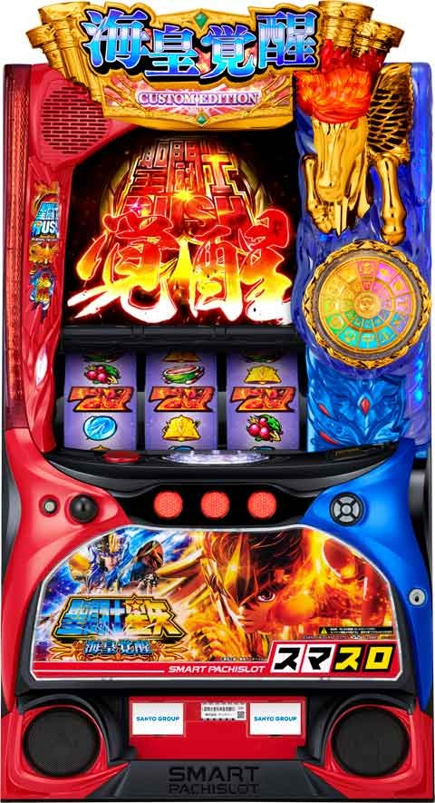

L聖闘士星矢海皇覚醒

【天井情報】
ゲーム数天井 999G+α GB確定
仮天井 600G+α 50%でGB当選
SR後 500G+α
GBスルー天井 8スルー後 SR濃厚
天井短縮 10.2%で2スルー天井
※SR後の引き戻しGBも1回としてカウント
【リセット判別】
ガックンするが通常時もガックンするため判断が難しい。
リセ時は初期GB間G数はランダム加算される。
据置時は内部依存で前兆開始
【有利区間について】
差枚+2200枚以上の時、またはSR突入時(引き戻しGB含む)差枚+1200枚以上の時に有利切れる。
エンディング到達でビッグバンボーナスに当選。有利区間リセットされビッグバンチャレンジへ移行。
ビッグバン履歴
{kind=link}
狙い目
【狙い目の注意点】
不屈解放後は機械割がガクッと下がる。
不屈解放後はボーダーを70-80G上げてください。
スルー回数はメニュー画面で確認
示唆の影響が強いため、機械割基準で示唆見に行く場合2-3%ボーダー下げ、示唆見られていそうな場合は2-3%ボーダー上げている狙い目になります。
【リセット狙い】
0Gから(機械割104％程度)
※リセットは不屈ptやGBレベル優遇あるため、GB当選まで打って示唆見る価値がある。
積極派
不屈小 解放まで
GBレベル3以上 SRまで(非推奨)
慎重派
不屈中 解放まで
GBレベル4以上 SRまで
【GB間天井狙い】
SR後 270Gから
2スルー 390Gから
それ以外
900G超え履歴無し 480Gから
900G超え履歴有り 380Gから
※GBレベルや不屈ポイントの影響が強いため、2スルーとそれ以外はボーダー高めに設定。
※SR後(内部1スルー)は天井短縮+GB後スルー天井短縮の示唆が見れるため少しボーダー下げてます。
※900超え履歴2回以上でGBレベル3以上濃厚な場合はボーダー下げる。
【GBスルー天井狙い】
5スルー
GBレベル不明 390Gから
GBレベル3以上 0Gから
6スルー
GBレベル3以上 0Gから
GBレベル2以上
積極派 0Gから
慎重派 250Gから
GBレベル不明、履歴に900以上ハマり無い場合 300Gから
7スルー 不問で0Gから
※SR直撃時はスルー回数がリセットされない。ただ、有利区間リセットされた場合は例外。
スルー回数はメニュー画面でもチェック可能。
【不屈ポイント狙い】
不屈大は必ず解放まで
不屈中は解放まで(非等価は注意)
不屈小
積極派 解放まで
慎重派 GBレベル3以上なら？
不屈中は5時間、不屈小は7時間確保した方が良い。
【GBレベル狙い】
積極派 GBレベル3以上(非推奨)
慎重派
GBレベル4以上
GBレベル3以上 200Gから
※SR当選まではレベル下がらないため原則SR当選まで打ち切り
※900G以上ハマるとGBレベルが上がる
【ゾーン狙い】
100Gゾーン狙い
以下の時は90Gから
1スルー(当選時2スルー仮天井示唆見るため)
2スルー
4スルー以上(GB当選時スルー天井狙いに切り替え出来る場合)
GBレベル3以上
【コスモチャージ狙い】
334Gから336Gやめの台
300Gの前兆外れた場合はコスモチャージが発生するので打てそう
【コスモポイント狙い】
900ptから
【有利区間切れ狙い】
SR後(内部1スルー)
以下の場合GB当選まで
差枚+1500枚以上 180Gから
差枚+1000枚以上 220Gから
差枚+500枚以上 250Gから
やめ時
SR終了後の引き戻しGB消化とコスモチャージの前兆確認してやめ。
GB後は不屈ポイントやスルー回数などで押し引き。
GB1戦目負け後はコスモチャージ確定なのでコスモチャージ消化してやめ。
GB終了時は火時計を押して示唆確認。
その他
通常時のモード
{kind=link}
不屈抽選
{kind=link}
LEDランプ時GBレベル示唆
{kind=link}
コスモチャージセリフ示唆
{kind=link}
参考元
基本情報
- メーカー: サンスリー
- 機械割: 97.5% 〜 114.9%
- 導入開始日: 2024年06月03日（月）
- ゲーム性概要: スマスロになって初代海皇覚醒が完全復活。基本的なゲーム性は初代海皇覚醒と同じで、通常時はレア役や小宇宙ポイント、ゲーム数消化でGBを目指し、見事GBを突破することができればATへ突入する。 CZのフェニックスチャンス、火時計覚醒、ビッグバンチャレンジなど新規で追加されている要素にも注目だ。


打ち方
打ち方・小役
打ち方（小役狙い）
［最初に狙う絵柄］

上段付近に赤7を目押し。
［赤7上段停止時］ 成立役：ハズレ（1枚）orリプレイor共通ベルorチャンス目

［角チェリー停止時］ 成立役：弱チェリーor強チェリー

［スイカ下段停止時］ 成立役：スイカorチャンス目or確定役

右リールは赤7付近を狙えばOKだ。
［レア役・共通ベルの停止形］

［確定役の停止例］

確定役は通常時ならAT直撃濃厚、ビッグバンクラッシュフリーズに派生することもある。 フラグは1つで、目押し位置によって停止形が変化する。
変則押しはNG

ナビ非発生時は左1stでの消化を推奨だ。
解析情報通常時
小役関連
［設定差なし］小役確率
| 役 | 確率 |
|---|---|
| 押し順ベル合算（こぼし含む） | 1/2.1 |
| リプレイ | 1/8.8 |
| 強チェリー | 1/327.7 |
| チャンス目（合算） | 1/218.5 |
| スイカ | 1/81.9 |
| 共通ベル | 1/28.1 |
| ハズレ（1枚役） | 1/1.2 |
| 確定役 | 1/16384.0 |
［設定差あり］弱チェリー確率
小役の確率は弱チェリーのみ高設定が優遇。確定役は中段チェリーを含め、複数の停止形があるが、フラグはひとつで、目押しの位置によって停止形が変化する。
GB当選率
低確中の強チェリー契機の当選率に若干の設定差はあるが、大きな設定差はナシ。チャンス目・強チェリー成立時は必ず火時計ランプ点灯の前兆へ移行するが、基本的に期待できるのは高確中となる。
［低確中］レア役契機のGB当選率
| 設定 | チャンス目 | 強チェリー |
|---|---|---|
| 1 | 2.34% | 9.38% |
| 2 | 2.34% | 9.38% |
| 3 | 2.34% | 9.77% |
| 4 | 2.34% | 10.55% |
| 5 | 2.34% | 10.94% |
| 6 | 2.34% | 11.72% |
［高確中］レア役契機のGB当選率 （全設定共通）
| 役 | 当選率 |
|---|---|
| 弱チェリー | 0.78% |
| チャンス目 | 50.00% |
| 強チェリー | 50.00% |
当選時は最大36Gの前兆を経て告知される。
小宇宙チャージ当選率
| 滞在状態 | スイカ | スイカ以外 |
|---|---|---|
| CZ低確中 | 31.25% | － |
| CZ高確中 | 31.25% | 2.34% |
当選時は5〜8Gの前兆を経て告知。CZ高確中はスイカ時の当選に加え、毎ゲーム全役で小宇宙チャージが抽選される。
内部状態関連
GB抽選状態とCZ抽選状態
GB抽選状態は低確・高確の2種類で、高確中はレア役でのGB当選率がアップ。CZ抽選状態は低確・高確ショート・高確ロングの3種類あり、高確中はスイカだけでなく全役で小宇宙チャージを抽選する。
通常時の内部状態
| 内部状態 | 特徴 |
|---|---|
| GB抽選状態 | ● 低確・高確の2種類 ● おもな高確移行契機は弱チェリー ● 高確中はレア役時のGB当選率アップ |
| CZ抽選状態 | ● 低確・高確ショート・高確ロングの3種類 ● おもに小宇宙チャージ終了後に移行 ● 高確中はスイカ以外でも小宇宙チャージを抽選 ● 引き戻しGB終了後は必ず高確ロングへ移行 |
GB高確移行率
共通ベル契機の移行率は全設定共通。弱チェリー時は高設定ほどGB高確へ移行しやすい。GB高確中、再度GB高確に当選した場合は保証ゲーム数10Gが加算。保証の10G消化後は、ハズレ（1枚）とリプレイで転落が抽選される。
GB高確移行率
| 設定 | 共通ベル | 弱チェリー |
|---|---|---|
| 1 | 1.56% | 20.31% |
| 2 | 1.56% | 20.70% |
| 3 | 1.56% | 21.09% |
| 4 | 1.56% | 21.88% |
| 5 | 1.56% | 22.66% |
| 6 | 1.56% | 24.22% |
GB高確転落率（保証ゲーム消化後）
| 状態 | ハズレ・リプレイ |
|---|---|
| 高確→低確 | 17.19% |
CZ高確移行率＆転落率
小宇宙チャージ終了後とGB終了後にCZ高確ショートへの移行を抽選。移行率は 約2.3% と低めだが、移行すれば連続で小宇宙チャージに当選するチャンスだ。
CZ高確ショートで当選した小宇宙チャージの一部でCZ高確ロングへ移行。ロングは転落率が低いため、小宇宙チャージ連打に期待できる。 CZ高確中は全役で小宇宙チャージを抽選すると同時に、レア役以外の全役で転落を抽選する。 ちなみにAT後に移行する引き戻しGB失敗後は必ずCZ高確ロングへ移行するため即ヤメ厳禁だ。
［小宇宙チャージ終了時・GB終了後］CZ高確移行率
| 移行先 | 低確中 | 高確ショート中 | 高確ロング中 |
|---|---|---|---|
| 低確へ | 97.66% | － | － |
| 高確ショートへ | 2.34% | 99.22% | － |
| 高確ロングへ | － | 0.78% | 100% |
［非レア役時］CZ高確転落率
| 移行先 | 低確中 | 高確ショート中 | 高確ロング中 |
|---|---|---|---|
| 低確へ | 100% | 12.50% | 0.78% |
| 高確ショートへ | － | 87.50% | 4.69% |
| 高確ロングへ | － | － | 94.53% |
モード
通常時モード概要
通常時のモードは全部で3種類あり、各モードはおもにGBを契機に変化。おなじみのSPモードも健在で、天井は536Gと低く、滞在中は各種抽選値が大幅にアップする。
通常時のモード
| モード | 特徴 |
|---|---|
| 通常モード | ● デフォルトモード ● 100の位が 奇数のゾーン がチャンス ● 天井ゲーム数：999G |
| SP準備モード | ● 次回モードが必ずSPモード ● 100の位が 偶数のゾーン がチャンス ● 天井ゲーム数：999G |
| SPモード | ● GB当選ゲーム数、AT直撃確率、小宇宙ポイント1000pt時のGB当選率が大幅に優遇 ● 同モードは 約50% でループ ● 天井ゲーム数：536G |
小宇宙ポイント
1000pt到達時のGB当選率
1000pt到達時は必ず火時計ランプ点灯の前兆へ移行（最大36G）。SPモード中を除き、高設定ほど当選率が高い。
［SPモード以外］小宇宙ポイント契機のGB当選率
| 設定 | 当選率 |
|---|---|
| 1 | 18.75% |
| 2 | 19.14% |
| 3 | 19.53% |
| 4 | 20.70% |
| 5 | 21.48% |
| 6 | 23.05% |
［SPモード中］小宇宙ポイント契機のGB当選率
| 設定 | 当選率 |
|---|---|
| 全設定共通 | 50.00% |
小宇宙ポイント当選率
| 獲得 | リプレイ | ハズレ | 共通ベル | 弱レア役 |
|---|---|---|---|---|
| 0pt | － | 98.44% | － | － |
| 10pt | 99.22% | 1.56% | 98.44% | － |
| 20pt | － | － | － | 85.93% |
| 30pt | 0.78% | － | 0.78% | 6.25% |
| 50pt | － | － | 0.78% | 4.69% |
| 100pt | － | － | － | 3.13% |
1000pt到達でGBを抽選する。
小宇宙チャージ（CZ）
小宇宙チャージ概要

毎ゲーム成立役に応じて小宇宙ポイントを獲得。継続ゲーム数は5G・10G・15Gの3種類で、10G以上は5G消化後に「継続」の形で告知される。消化中の「赤7を狙え」は成功でGB直撃、「アテナ（白BAR）を狙え」は発生した時点でAT直撃濃厚。 また、小宇宙チャージ中も通常時と同じくGBやATを抽選している。
小宇宙チャージ性能
| 項目 | 内容 |
|---|---|
| 当選契機 | スイカの一部（CZ高確中は全役で抽選）、 通常時300G消化時、GB１戦目敗北後など |
| 継続ゲーム数 | 5Gor10Gor15G |
| 消化中の抽選 | 毎ゲーム成立役に応じて小宇宙ポイントを加算、 赤7揃い時はGB直撃、白BAR揃い時はAT直撃 |
| 備考 | 終了後はCZ高確率へ移行 |
［小宇宙ポイント上乗せ］

今回も星矢カットイン発生で100pt以上など、多彩なチャンスアップが存在する。
［赤7狙えカットイン］

青がデフォルト、赤ならGB濃厚！
［アテナを狙えカットイン］

発生した時点で白BAR揃い＝AT直撃濃厚！
小宇宙ポイント振り分け
| 獲得 | リプレイ | ハズレ | 共通ベル | 弱チェリー |
|---|---|---|---|---|
| 20pt | － | 80.47% | － | － |
| 30pt | 72.66% | 12.50% | 68.75% | － |
| 50pt | 21.09% | 6.25% | 21.10% | － |
| 100pt | 5.47% | 0.78% | 7.81% | 74.22% |
| 200pt | － | － | 0.78% | 18.75% |
| 300pt | － | － | 0.78% | 6.25% |
| 700pt | 0.78% | － | 0.78% | 0.78% |
| 獲得 | スイカ | チャンス目 | 強チェリー | 確定役 |
| 20pt | － | － | － | － |
| 30pt | － | － | － | － |
| 50pt | － | － | － | － |
| 100pt | 74.22% | － | － | － |
| 200pt | 18.75% | 91.41% | 91.41% | － |
| 300pt | 6.25% | 7.81% | 7.81% | 87.50% |
| 700pt | 0.78% | 0.78% | 0.78% | 12.50% |
特殊役はAT直撃も濃厚だ。
小宇宙チャージ継続ゲーム数振り分け
| ゲーム数 | 振り分け |
|---|---|
| 5G | 89.84% |
| 10G | 9.38% |
| 15G | 0.78% |
当選契機不問で5G〜15Gを抽選する。
GB・AT直撃当選率
小宇宙チャージ中は通常時とは別個で赤7揃いからのGB直撃、アテナ（白BAR）揃いからのAT直撃を抽選。小宇宙チャージが5Gだった場合でもGB以上（赤7orアテナ揃い）に直撃する期待度は約7%と比較的高い。
小宇宙チャージ中専用の狙えカットイン抽選値
| カットイン | 確率 | 成功期待度 |
|---|---|---|
| 赤7を狙え | 1/16.01 | 26.70% |
| アテナを狙え | 1/7615.19 | 100% |
| 合算 | 1/15.97 | 26.86% |
［赤7を狙え］

赤7揃いの実質確率（カットイン時に赤7が揃う確率）は約1/60だ。
［アテナを狙え］

アテナを狙えは発生した時点でAT濃厚！
フェニックスチャンス（特殊CZ）
フェニックスチャンス概要

小宇宙チャージ当選時の一部で移行する AT直撃 のチャンスゾーン。 失敗してもGBへ移行 する。AT当選時は火時計覚醒（ATの上位初期ゲーム数特化ゾーン）のチャンスとなる。
フェニックスチャンス性能
| 項目 | 内容 |
|---|---|
| 当選契機 | 小宇宙チャージ当選時の一部 |
| 継続ゲーム数 | 10G |
| AT当選率 | 約56%（失敗でもGB突入） |
| 消化中の抽選 | 毎ゲーム成立役に応じてAT直撃を抽選 （白BAR揃いやレア役成立でAT濃厚） |
| 備考 | AT当選時は火時計覚醒移行のチャンス |
フェニックスチャンス当選率
小宇宙チャージ前兆終了時にGBストックを持っていた場合の約50%でフェニックスチャンスへ当選。かなり限定された状況だが、小宇宙チャージ前兆中もGBは抽選されるため、前兆中の強レア役や小宇宙ポイント1000pt時はチャンスだ。
フェニックスチャンス当選率
| 契機 | 当選率 |
|---|---|
| 小宇宙チャージ前兆中のATストック所持時 | 50.00% |
成功抽選（AT当選率）＆初期ゲーム数特化ゾーン振り分け
レア役成立時もしくはアテナを狙えが成功すればAT直行。強レア役契機だった場合は火時計覚醒濃厚、強レア役以外での当選でも約30%で火時計覚醒へ移行する。
アテナ（白BAR）を狙え抽選値
| 項目 | 抽選値 |
|---|---|
| 発生確率 | 1/6.55 |
| アテナ揃い期待度 | 30.00% |
AT当選時の初期ゲーム数特化ゾーン振り分け
| 当選契機 | 火時計覚醒 | 天馬覚醒or女神覚醒 |
|---|---|---|
| 強レア役 | 100% | － |
| 弱レア役 | 29.7% | 70.3% |
| アテナ揃い | 29.7% | 70.3% |
［レア役時］

［アテナを狙え］

不屈ポイント
不屈ポイント概要

プレイヤーに不利なことが起こると蓄積されるポイントで、MAXの50ptまで貯まった状態でGB当選に当選すると突破（3戦勝利）確定。従来機と同じく、通常時のエフェクトやGB終了時の火時計PUSH時の色でポイント量が示唆される。
不屈ポイント獲得契機
| No. | 契機 |
|---|---|
| 1 | 設定変更時（初期ポイント） |
| 2 | 小宇宙ポイント1000ptでGB非当選 |
| 3 | GB初戦敗北 |
| 4 | ゲーム数ハマリ |
※各契機時に必ず1pt以上加算（50ptでMAX）
不屈ポイントの獲得＆保有量
不屈ポイントの獲得タイミング＆保有量示唆の発生タイミングは決まっていて、エフェクトパターンで獲得ポイント量を示唆。 保有量示唆が発生すれば40pt以上濃厚 となるためAT当選まで打つ価値はある。ただ、40pt以上あってもMAXの50ptまで貯めるのは意外と大変（1契機での最低獲得は1ptのため）なので、時間や余力次第で追うかどうかを判断しよう。
不屈ポイント獲得・保有量示唆発生タイミング
| パターン | 発生トリガー |
|---|---|
| 通常時 | 第3停止後 |
| 900Gハマリ時 | 第3停止後 |
| 火時計カウンター全消灯時 | 第3停止後 |
| GB1戦目敗北時 | 次ゲームのレバーON時 |
不屈ポイント獲得契機の詳細
| 契機 | 詳細 |
|---|---|
| 火時計再点灯4回 （初回含め計5回点灯） | ポイント獲得濃厚 ＋最も多いポイントに期待できる |
| 火時計再点灯3回 （初回含め計4回点灯） | ポイント獲得の期待大 ＋大量ポイントに期待できる |
| 火時計再点灯2回 （初回含め計3回点灯） | 獲得期待度低め |
| GB初戦敗北 | ポイント獲得濃厚 ＋そこそこ多いポイントに期待できる |
| 通常時GB間900G消化 | ポイント獲得濃厚 |
| 小宇宙ポイント1000ptでの GB非当選時 | ポイント獲得濃厚 |
GB期待度の低いチャンス目でも火時計再点灯濃厚なので、いかに前兆中に強レア役を引けるかが不屈ポイント獲得の鍵だ。 また、MAX（50pt）の超過分は次回に持ち越される（有利区間リセットでクリア）。
不屈ポイント獲得量示唆
| パターン | 示唆 |
|---|---|
| 小 | 1pt以上獲得 |
| 中 | 5pt以上獲得 |
| 大 | 40pt以上獲得 |
不屈ポイント保有量示唆
| パターン | 示唆 |
|---|---|
| 小 | 40pt以上保有 |
| 中 | 45pt以上保有 |
| 大 | 50pt以上保有（MAX） |
［獲得示唆：小］

［獲得示唆：中］

［獲得示唆：大］

［保有量示唆：中］

［保有量示唆：大］

大は次回GBでATが確定するため、GB当選まで打とう！
前兆
小宇宙チャージストック時の放出ゲーム数
小宇宙チャージのストックがある場合は 5〜8G の前兆を経て告知。小宇宙チャージ終了後にざわざわしていれば、ストックありの可能性大だ。
各種前兆中の抽選
小宇宙チャージ、GB、ATともに前兆中も小宇宙チャージ、GB、ATを抽選。各要素の本前兆がかぶるケースは少ないが、放出の優先順はATからになる。
直撃抽選
AT直撃抽選
通常時は毎ゲームAT直撃を抽選。確定役成立時はAT直撃が確定する。確定役以外の直撃当選率はこれまでと同じく高設定ほど優遇!?
［SPモード中］AT直撃当選率
| 設定 | 確率 |
|---|---|
| 全設定共通 | 1/409.6 |
天井
GBスルー回数天井振り分け
| スルー回数 | 当選率 |
|---|---|
| 2回 | 10.16% |
| 8回 | 89.84% |
振り分けは設定変更後と同じだ。
演出動画
ビッグバンクラッシュフリーズ
女神覚醒＋上位AT当選となるプレミアムフラグ。確定役成立時の一部で発生する。
フリーズ
ビッグバンクラッシュフリーズ

確定役成立時の一部で発生。恩恵は女神覚醒＋上位AT（覚醒聖闘士ラッシュ）と超豪華だ。
ビッグバンフリーズ性能
| 項目 | 契機 |
|---|---|
| 当選契機 | 確定役当選時の一部 |
| 発生タイミング | レバーON時or第3停止後 |
| 恩恵 | 女神覚醒＋上位AT（覚醒聖闘士ラッシュ） |
解析情報ボーナス時
海将軍激闘（GB）
GB概要

３戦突破すればAT濃厚 となるおなじみの初当り。今回も勝率はGBレベルで管理されている。1戦目・2戦目の勝利でATとなる振り分けもあるが、選択率はかなり低い。敗北後はGBレベルの昇格を抽選するため、基本的にスルー回数が多いほどGBを突破しやすくなる。3戦目に負けた時に限り復活（AT濃厚）が抽選される。 消化中は強レア役で勝利ストック（続）を抽選していて、チャンス目なら当選のチャンス、強チェリーなら獲得濃厚となる。
［AT終了後のGB］ AT終了後に突入する引き戻しGBは、スルーしてもGBレベルの昇格は抽選されないが、必ずCZ高確ロングへ移行する。※AT終了後の引き戻しGBレベル抽選内容は調査中
［900G移行のGBは必ずレベルアップ］ 天井（999G）を含め、900Gを越えて当選したGBスルー時は必ずGBレベルが1以上アップ。天井到達後の台を狙ってみるのもひとつの手だ。
海将軍激闘（GB）性能
| 項目 | 内容 |
|---|---|
| 当選契機 | レア役時の抽選、小宇宙ポイント1000pt時の抽選、 小宇宙チャージ中の直撃など |
| 継続ゲーム数 | 導入：16G／バトル：1戦あたり8G |
| 1Gあたりの純増 | 約2.5枚 |
| バトル継続率 | 50%or60%or70%or80%or99% ※GBレベルで決定 |
| 消化中の抽選 | 強レア役で「続ストック」（継続ストック）抽選、 強チェリーはストック濃厚 |
| 勝利条件 | 3戦突破でAT突入（1&2戦目の振り分けもあり） |
| 備考 | 敗北後はGBレベルの昇格を抽選、 900G以降のGB敗北時は必ず昇格 |
| スルー回数天井 | 最大8スルーで9回目のGBが突破確定 （2スルーの振り分けもあり） |
GBレベルごとの継続率（1戦ごとの継続率）
| GBレベル | 継続率 |
|---|---|
| レベル1 | 50% |
| レベル2 | 60% |
| レベル3 | 70% |
| レベル4 | 80% |
| レベル5 | 99% |
［導入パート］

［バトルパート］

勝利抽選は開始時にGBレベルを参照して、3戦分を一気におこなうため、基本的にバトル開始時には最終結果が決まっている（強レア役時の続ストックは抽選）。
［セブンセンシズモードへの変更］

バトルパート開始時、内部的におこなわれているバトルをひと繋がりで見せるセブンセンシズモードに変更可能。フリーズ＝AT濃厚となる（パチンコの保留消化のように進行）。
AT確定状態の上乗せ当選率
GB開始時の3戦突破抽選に当選したり、不屈発動時、バトル開始時の継続抽選当選（3戦分まとめて抽選するため）時など、AT当選が確定している状況では、AT中と同じ抽選値でゲーム数上乗せを抽選する。
［AT確定後のGB中］ATゲーム数上乗せ当選率
| 役 | 当選率 |
|---|---|
| 弱チェリー | 約20% |
| スイカ | 低め（当選時は＋100G以上） |
| チャンス目 | 100%（＋10G以上） |
| 強チェリー | 100%（＋20G以上） |
GBレベル昇格率
GB敗北時は敗北タイミング（1戦目or2戦目）にかかわらず、GBレベルの昇格を抽選。900G以上経過後のGB敗北時は必ずGBレベルが1段階アップ、AT終了後のGB敗北時は昇格抽選はおこなわれない。
初期GBレベル振り分け
基本的に高設定ほど上位レベルが選ばれやすい。
GB突破条件振り分け
| 突破条件 | 振り分け |
|---|---|
| 1戦突破 | 0.78% |
| 2戦突破 | 0.78% |
| 3戦突破 | 98.44% |
かなりレアだが、1戦目や2戦目突破でAT濃厚となる振り分けもある。
続ストック当選率（GB中の抽選）

チャンス目は続ストック（バトル1戦分の勝利権利）のチャンス、強チェリーは続ストック濃厚。確定役はAT濃厚となる。
続ストック当選率
| 役 | 当選率 |
|---|---|
| チャンス目 | 12.50% |
| 強チェリー | 100% |
| 確定役 | AT濃厚 |
初期ゲーム数特化ゾーン
天馬覚醒・女神覚醒概要
AT開始時は基本的に天馬覚醒で初期ゲーム数を決定。毎ゲーム成立役に応じてATゲーム数が上乗せされる。 開始時の一部で選ばれる女神覚醒は上乗せ性能が天馬覚醒の2倍となるため、大量ゲーム数獲得に期待可能（火時計覚醒の場合もあり）。 保証ゲーム数は10Gだが、共通ベル成立時や狙えカットインは保証ゲーム数が減算されない。
天馬覚醒/女神覚醒 性能
| 項目 | 内容 |
|---|---|
| 突入契機 | AT初当り時、AT引き戻し時 |
| 継続ゲーム数 | 10G＋α |
| 1Gあたりの純増 | 約2.5枚（上位AT時は約5.1枚） |
| 消化中の抽選 | 毎ゲームATゲーム数を上乗せ 上乗せ時の一部で幻魔拳フリーズに当選 |
| 備考 | 女神覚醒の上乗せ性能は天馬覚醒の約2倍 |
［天馬覚醒］

［女神覚醒］

［狙えカットイン］

成功時はゲーム数が上乗せされるだけでなく、幻魔拳フリーズ発生にも期待できる。成否を問わず保証ゲーム数は減算されない。
［幻魔拳フリーズ］

100G以上の上乗せ濃厚＋ループ性あり。
火時計覚醒概要

新たに搭載された初期ゲーム数特化ゾーンで、AT100G以上＋黄金聖闘士アタック1個以上が確約（最低保証）。天馬覚醒のように毎ゲーム上乗せされるわけではないが、消化中の上乗せに 当選すれば＋100Gor黄金聖闘士アタック濃厚 なので、ヒキ次第で凄まじい上乗せに繋がる可能性がある。
火時計覚醒 性能
| 項目 | 内容 |
|---|---|
| 突入契機 | AT初当り時、AT引き戻し時 |
| 継続ゲーム数 | 12G＋α |
| 1Gあたりの純増 | 約2.5枚（上位AT時は約5.1枚） |
| 消化中の抽選 | 上乗せ当選で AT＋100G以上or黄金聖闘士アタック濃厚 |
| 最低保証 | AT＋100G以上＆黄金聖闘士アタック1個 |
［上乗せ時は火時計を使用］

おなじみの一発PUSHや連打パターンが存在する。
［狙えカットイン］

天馬覚醒などと同じく成功・失敗を問わずゲーム数の減算はされない。成功すれば上乗せ濃厚だ。
ルート別の特化ゾーン割合
ビッグバンチャレンジを突破した契機役によって初期ゲーム数特化ゾーン（上位ATの初期ゲーム数決定）の振り分けが変わり、強レア役契機の突破なら火時計覚醒濃厚。女神覚醒こそないが、 火時計覚醒のトータル選択率は37.5% と高いところがポイントだ。 ビッグバンクラッシュフリーズ経由で上位ATに突入する場合のみ、初期ゲーム数特化ゾーンが女神覚醒になる。 ちなみに、ビッグバンチャレンジ中、内部的に突破が確定している場合、告知までのゲームで引いた役を参照して火時計覚醒への昇格が抽選される。
［通常の当選ルート］初期ゲーム数特化ゾーン振り分け
| 初期ゲーム数特化ゾーン | 振り分け |
|---|---|
| 天馬覚醒 | 99.08% |
| 女神覚醒 | 0.31% |
| 火時計覚醒 | 0.61% |
※フェニックスチャンスやビッグバンチャレンジ、ロングフリーズ経由以外
ビッグバンチャレンジ成功時の振り分け
| 初期ゲーム数特化ゾーン | 振り分け |
|---|---|
| 天馬覚醒 | 62.5% |
| 女神覚醒 | － |
| 火時計覚醒 | 37.5% |
上位AT移行時の初期ゲーム数特化ゾーン比率
| 設定 | 天馬覚醒 | 女神覚醒 | 火時計覚醒 |
|---|---|---|---|
| 1 | 49.74% | 0.13% | 50.13% |
| 2 | 49.93% | 0.13% | 49.94% |
| 3 | 50.13% | 0.13% | 49.74% |
| 4 | 50.33% | 0.13% | 49.54% |
| 5 | 50.53% | 0.13% | 49.34% |
| 6 | 50.73% | 0.13% | 49.14% |
※女神覚醒はビッグバンクラッシュフリーズ経由時の数値
天馬・女神覚醒中の上乗せゲーム数
| 役 | 天馬覚醒 | 女神覚醒 |
|---|---|---|
| リプレイ | ＋10G | ＋20G |
| ハズレ（1枚役） | ＋10or20G | ＋20G |
| 押し順ベル | ＋10or30G | ＋20G以上 |
| 共通ベル | ＋10or30G | ＋20G以上 |
| 弱レア役 | ＋30G以上 | ＋30G以上 |
| 強レア役 | ＋50G以上 | ＋50G以上 |
| 確定役 | ＋100G以上 | ＋100G以上 |
天馬・女神覚醒中の保証ゲーム数後の終了当選率
| 役 | 天馬覚醒 | 女神覚醒 |
|---|---|---|
| ハズレ（1枚役） | 100% | 50.0% |
［ハズレを引くまで継続］

規定ゲーム数が終了しても押し順ベル以上を引けば継続濃厚なので、ヒキ次第で上乗せゲーム数を大幅に加算することができる。天馬覚醒はハズレで必ず終了、女神覚醒は50%で継続する。
幻魔拳フリーズ抽選

天馬覚醒・女神覚醒中には内部的に3段階のフリーズモードがあり、開始時はモード0からスタート。 狙え成功時にモード昇格が抽選 され、モードが高いほど幻魔拳フリーズの発生率がアップする。 ただし、モードは「狙え演出もしくは特殊役成立以外の幻魔拳フリーズ非発生ゲーム」でモード0に戻るため、狙え演出を連続で引いてモードを上げてフリーズに期待するのが現実的な流れだ。
［天馬覚醒］狙え演出成功時のフリーズモード移行率
| 移行先 | モード0時 | モード1時 | モード2時 | モード3時 |
|---|---|---|---|---|
| モード0 | 97.66% | － | － | － |
| モード1 | 0.78% | 25.00% | － | － |
| モード2 | 0.78% | 50.00% | 25.00% | － |
| モード3 | 0.78% | 25.00% | 75.00% | 100% |
［女神覚醒］狙え演出成功時のフリーズモード移行率
| 移行先 | モード0時 | モード1時 | モード2時 | モード3時 |
|---|---|---|---|---|
| モード0 | 87.50% | － | － | － |
| モード1 | 10.94% | 25.00% | － | － |
| モード2 | 0.78% | 50.00% | 25.00% | － |
| モード3 | 0.78% | 25.00% | 75.00% | 100% |
女神覚醒中はフリーズモード1へ行きやすいため、結果的に幻魔拳フリーズが発生しやすい。
フリーズモード別の幻魔拳フリーズ当選率
| 滞在モード | 当選率 |
|---|---|
| モード0 | 0.78% |
| モード1 | 50.00% |
| モード2 | 62.50% |
| モード3 | 75.00% |
幻魔拳フリーズ発生時の上乗せゲーム数振り分け
| 上乗せ | 当選率 |
|---|---|
| ＋100G | 99.22% |
| ＋300G | 0.78% |
上乗せゲーム数振り分け
| 上乗せ | リプレイ | 7揃い時 | 押し順ベル | ハズレ | 共通ベル |
|---|---|---|---|---|---|
| ＋10G | 100% | － | 92.19% | 96.87% | 95.31% |
| ＋20G | － | － | － | 3.13% | － |
| ＋30G | － | － | 7.81% | － | 4.69% |
| ＋50G | － | 98.44% | － | － | － |
| ＋100G | － | 0.78% | － | － | － |
| ＋300G | － | 0.78% | － | － | － |
| 上乗せ | 弱チェリー | スイカ | チャンス目 | 強チェリー | 確定役 |
| ＋10G | － | － | － | － | － |
| ＋20G | － | － | － | － | － |
| ＋30G | 98.44% | 88.28% | － | － | － |
| ＋50G | － | － | 88.28% | 75.78% | － |
| ＋100G | 0.78% | 10.94% | 10.94% | 23.44% | 75.00% |
| ＋300G | 0.78% | 0.78% | 0.78% | 0.78% | 25.00% |
女神覚醒は最低上乗せが20Gになるため、上表の＋10Gがすべて20Gになる。
上乗せ当選率
| 上乗せ | ハズレ | リプレイ | 押し順ベル | 共通ベル |
|---|---|---|---|---|
| 火時計A | 0.11% | 3.73% | 0.48% | 3.75% |
| ＋100G | 9.33% | 22.05% | 10.44% | 21.71% |
| ＋200G | － | － | － | － |
| ＋300G | － | － | － | － |
| 黄金聖闘士A | 8.90% | 7.81% | 8.87% | 7.68% |
| トータル | 18.34% | 33.59% | 19.79% | 33.14% |
| 上乗せ | 女神揃い | 弱レア役 | 強レア役 | 確定役 |
| 火時計A | 15.70% | 15.79% | 11.85% | 6.36% |
| ＋100G | 76.73% | 68.67% | 0.04% | 0.01% |
| ＋200G | 1.09% | 3.18% | 43.94% | － |
| ＋300G | 1.05% | 0.71% | 5.67% | 43.63% |
| 黄金聖闘士A | 5.43% | 11.65% | 38.50% | 50.00% |
| トータル | 100% | 100% | 100% | 100% |
※A…アタックの略 ※火時計アタックの平均上乗せは177G
チャンス目、強チェリー、確定役での100G上乗せ時は、さらに100G以上の裏乗せまたは黄金聖闘士アタックの裏乗せ濃厚。 上記上乗せに漏れた場合でも、＋100G以上＆黄金聖闘士アタック1個が保証される。
聖闘士ラッシュ（AT）
AT概要

消化中はレア役でゲーム数上乗せ、聖闘士アタック（青銅or黄金）、千日戦争、聖闘士ボーナスを抽選する。 また、聖闘士アタックはゲーム数消化でも抽選。 200G消化ごとに「アテナ（白BAR）を狙え高確率」が抽選 され、白BARが揃えばビッグバンチャレンジの権利を獲得できる（AT終了後にビッグバンチャレンジへ）。
AT（聖闘士ラッシュ）性能
| 項目 | 内容 |
|---|---|
| 突入契機 | GB突破、直撃抽選など |
| 継続ゲーム数 | 初期ゲーム数特化ゾーンで決定 |
| 1Gあたりの純増 | 約2.5枚 |
| 消化中の抽選 | レア役でゲーム数上乗せと聖闘士アタック抽選、 ゲーム数消化で聖闘士アタック抽選、 赤7揃いで聖闘士ボーナス当選、 200G消化ごとにアテナを狙え高確率を抽選 |
| 備考 | 終了後は引き戻しGBへ移行 |
上位AT（覚醒聖闘士ラッシュ）概要

ビッグバンチャレンジ成功を契機に移行する上位AT。抽選内容は通常のAT（聖闘士ラッシュ）とほぼ同じだが、純増が5.1枚にアップしている。 また、終了後に移行する引き戻しGBは1勝した状態でスタート。勝てばビッグバンチャレンジへ移行する。
上位AT（覚醒聖闘士ラッシュ）性能
| 項目 | 内容 |
|---|---|
| 突入契機 | GB突破、直撃抽選など |
| 継続ゲーム数 | 初期ゲーム数特化ゾーンで決定 |
| 1Gあたりの純増 | 約5.1枚 |
| 消化中の抽選 | レア役でゲーム数上乗せと聖闘士アタック抽選、 ゲーム数消化で聖闘士アタック抽選、 赤7揃いで聖闘士ボーナス当選、 200G消化ごとにアテナを狙え高確率を抽選 |
| 備考 | 終了後は引き戻しGBへ移行 |
［消化中は色ナビが出るので純増が多い］

ちなみに通常のAT中は色ナビが出ないため、2択に成功していれば15枚が揃う（2択失敗で4枚）。上位ATではその2択がナビされる＝純増がほぼ倍になるわけだ。
アテナ（白BAR）を狙え高確率

AT中は200G消化ごとにアテナを狙え高確率移行を抽選。当選時は20G間の高確率状態へ移行する。200G＜400Gのように消化ゲーム数が多いほど移行率がアップする。一度白BARが揃う（ビッグバンチャレンジ獲得）と、以降はAT終了までアテナを狙え高確率へは移行しない。
アテナを狙え高確率 性能
| 項目 | 内容 |
|---|---|
| 突入契機 | AT中の200G消化ごとの抽選 |
| 継続ゲーム数 | 20G |
| 消化中の抽選 | アテナ（白BAR）揃い確率アップ ※揃えばビッグバンチャレンジ獲得 |
アテナフリーズ


発生した時点で 1000G以上の上乗せ が確定する。
ゲーム数上乗せ＆特化ゾーン当選率
ゲーム数上乗せと特化ゾーン（聖闘士アタック以上）はダブル抽選なので、1つの契機で両方に当選する可能性あり。今回もスイカでのゲーム数上乗せは＋100G以上、弱レア役での特化ゾーン当選はまれだが黄金聖闘士アタックや千日戦争に期待できる。 また、ゲーム数消化やハズレ・リプレイ・共通ベルでも特化ゾーンを抽選しているため、レア役非成立時でも前兆が始まれば特化ゾーンに期待できる。
［AT中］特化ゾーン当選率
| 役 | 当選率 |
|---|---|
| 弱チェリー | 低め （当選時は上位特化ゾーンに期待） |
| スイカ | 低め （当選時は上位特化ゾーンに期待） |
| チャンス目 | 約25% |
| 強チェリー | 約33% |
| 確定役 | 100% |
※ハズレ・リプレイ・ベルでも低確率で抽選
特化ゾーン当選時の振り分け
| 前兆 | 青銅聖闘士 アタック | 黄金聖闘士 アタック | 千日戦争 |
|---|---|---|---|
| ハズレ | 35.37% | 58.95% | 5.68% |
| リプレイ | 55.46% | 44.36% | 0.18% |
| 共通ベル | 35.37% | 58.95% | 5.68% |
| 弱チェリー | 19.95% | 55.21% | 24.84% |
| スイカ | 19.95% | 55.21% | 24.84% |
| チャンス目 | 70.78% | 28.69% | 0.53% |
| 強チェリー | 58.56% | 39.30% | 2.14% |
| 確定役 | 55.42% | 44.41% | 0.17% |
上位特化ゾーン＝聖闘士アタック・千日戦争
聖闘士アタック（青銅／黄金）
青銅聖闘士アタック

登場する青銅聖闘士によって上乗せゲーム数期待値が変化する1G固定の特化ゾーン。黄金聖闘士アタックと異なり、上乗せ告知的な要素となっている。
青銅聖闘士アタック性能
| 項目 | 内容 |
|---|---|
| 突入契機 | AT中のレア役、ゲーム数消化時の抽選 |
| 継続ゲーム数 | 1G |
| 消化中の抽選 | アテナ（白BAR）揃い確率アップ ※揃えばビッグバンチャレンジ獲得 |
青銅聖闘士アタックの登場キャラ
| キャラ | ゲーム数期待度 | 備考 |
|---|---|---|
| 瞬 | 低 | 強パターンは＋300G以上 |
| 氷河 | ↓ | 強パターンは＋100G以上 |
| 紫龍 | ↓ | 強パターンは＋100G以上 |
| 一輝 | ↓ | ＋300G濃厚 |
| 星矢 | 高 | 平均上乗せ200G以上 |
最も期待できる星矢は瞬・氷河・紫龍の途中から登場する。
聖闘士ごとの平均上乗せゲーム数
| 聖闘士 | 平均上乗せ | |
|---|---|---|
| 瞬 | ネビュラチェーン | 42.0G |
| 瞬 | ネビュラストーム | 511.0G |
| 氷河 | カウントアップ | 51.1G |
| 氷河 | オーロラエクスキューション | 124.7G |
| 紫龍 | 停止上乗せ | 60.9G |
| 紫龍 | エクスカリバー | 123.1G |
| 一輝 | 300.0G | |
| 星矢 | 瞬から登場 | 292.4G |
| 星矢 | 氷河から登場 | 224.4G |
| 星矢 | 紫龍から登場 | 225.2G |
［登場するキャラに注目］

黄金聖闘士アタック

黄金聖闘士と海将軍が対決するおなじみの特化ゾーン。登場する黄金聖闘士によってバトル継続率や上乗せゲーム数期待値が変化する。消化中は成立役に応じて追撃（追加上乗せ）や継続ストックを抽選。 今回は開始時に好きな黄金聖闘士に変更することができる（上乗せ性能は最初に登場していた黄金聖闘士に準ずる）。
黄金聖闘士アタック性能
| 項目 | 内容 |
|---|---|
| 突入契機 | AT中のレア役、ゲーム数消化時の抽選 |
| 継続ゲーム数 | 継続率に漏れるまで |
| 消化中の抽選 | 成立役に応じて継続ストック・追撃を抽選 |
| 備考 | 性能は登場する黄金聖闘士によって変化、 消化中はATゲーム数の減算ストップ |
タイプ別特徴
| タイプ | 特徴 |
|---|---|
| パワー | バトル継続率：低、継続時は上乗せ＋20G以上 |
| スピード | バトル継続率：高、継続時はほぼ上乗せ＋10G |
| バランス | バトル継続率：中、パワーとスピードの中間 |
| 波乱 | バトル継続率：低、 継続すれば＋100G以上 （1～3宮目は除く） |
黄金聖闘士ごとの性能
| 聖闘士 | タイプ | 勝利保証 |
|---|---|---|
| アルデバラン | パワー | 1戦 |
| シュラ | パワー | 1戦 |
| サガ | パワー | 4戦 |
| ミロ | スピード | 2戦 |
| アイオリア | スピード | 2戦 |
| ムウ | スピード | 2戦 |
| アフロディーテ | バランス | 2戦 |
| カミュ | バランス | 2戦 |
| シャカ | バランス | 2戦 |
| デスマスク | 波乱 | 2戦 |
［ムウ・サガ・シャカは大チャンス！］

出現率はかなり低いが、ムウ・サガ・シャカの3人は上乗せ性能が高いためアツイ。
［黄金聖闘士が倒れるまで継続］

先制攻撃や攻撃回避、耐える…はすべて継続濃厚。倒れた後の復活パターンも健在だ。
［追撃］

レア役を引かなくても、7戦目と9戦目は追撃発生濃厚。さらに、各黄金聖闘士の宮に対応した回数（アルデバランなら12宮の2つ目なので2戦目）でも追撃発生が濃厚となる。
黄金聖闘士の選択率＆性能詳細
| 聖闘士 | 選択率 | 平均上乗せ | 平均継続 |
|---|---|---|---|
| ムウ | 0.5% | 365.7G | 18.6回 |
| アルデバラン | 11.3% | 89.7 G | 4.1回 |
| デスマスク | 21.2% | 41.8 G | 3.8回 |
| アイオリア | 5.4% | 150.6G | 10.9回 |
| シャカ | 0.5% | 376.0G | 16.1回 |
| ミロ | 25.0% | 58.1 G | 5.7回 |
| シュラ | 5.4% | 161.5 G | 6.6回 |
| カミュ | 5.4% | 154.8 G | 9.6回 |
| アフロディーテ | 25.0% | 59.3 G | 5.2回 |
| サガ | 0.3% | 490.9 G | 13.3回 |
今回もムウ、シャカ、サガの選択率は激低だ。
千日戦争
千日戦争概要

聖闘士アタック当選時の一部で突入する最強の特化ゾーン。ポセイドンと星矢が対決する黄金聖闘士アタックの超強力バージョンと考えてOKだ。終了後は21G継続するポセイドン撃破エピソードを経てATへ復帰する。
千日戦争 性能
| 項目 | 内容 |
|---|---|
| 突入契機 | 聖闘士アタック当選時の一部 |
| 継続ゲーム数 | 継続率に漏れるまで |
| 消化中の抽選 | 成立役に応じて継続ストック・追撃を抽選、 継続ごとにATゲーム数＋30G以上 |
| 最低保証 | 7戦継続＋追撃1回 |
| 平均継続 | 15.5回 |
| 平均上乗せゲーム数 | 616.6G |
| 備考 | 消化中はATゲーム数の減算ストップ |
［星矢が倒れるまで継続］

星矢の攻撃がHIT、ポセイドンの攻撃回避など、おなじみの継続濃厚パターンが満載。
聖闘士ボーナス
聖闘士ボーナス概要

AT中の赤7揃いから突入。消化中は聖闘士アタックやATゲーム数上乗せを抽選する。
聖闘士ボーナス性能
| 項目 | 内容 |
|---|---|
| 突入契機 | AT中の赤7揃い （狙えカットイン発生時） |
| 継続ゲーム数 | 40G |
| 消化中の抽選 | ATゲーム数上乗せ、聖闘士アタック、 ビッグバンアタックを抽選 |
| 備考 | 消化中はATゲーム数の減算ストップ |
※液晶は初代海皇覚醒のもの
エンディング（ビッグバンボーナス）
ビッグバンボーナス概要

いわゆるエンディングで、終了後は有利区間がリセットされ、ビッグバンチャレンジへ移行する（AT引き戻し以上濃厚）。
ビッグバンボーナス性能
| 項目 | 内容 |
|---|---|
| 突入契機 | エンディング到達時 |
| 獲得枚数 | 約200枚 |
| 1Gあたりの純増 | 約5.1枚 |
| 備考 | 終了後はビッグバンチャレンジへ |
ビッグバンチャレンジ
ビッグバンチャレンジ概要

失敗しても初期ゲーム数特化ゾーンを経てATへ復帰、成功した場合は天馬覚醒or火時計覚醒（比率は1：1）を経由して上位AT（覚醒聖闘士ラッシュ）へ突入。消化中の小役揃いで成功のチャンス、強レア役成立時は成功＋火時計覚醒濃厚となる。
ビッグバンチャレンジ性能
| 項目 | 内容 |
|---|---|
| 突入契機 | AT初当り時の一部、権利獲得後のAT終了後、 ビッグバンボーナス後 |
| 継続ゲーム数 | 12G＋α |
| 突破期待度 | 約50% |
| 消化中の抽選 | 小役揃いで成功を抽選、 強レア役・白BAR揃いで成功濃厚 |
| 備考 | 成功すれば上位AT、失敗時はATへ移行 |
［内部的なゲーム数加算］ ビッグバンチャレンジ中は小役が入賞ごとに、内部的に1G加算されていて、加算分は画面上のゲーム数がなくなった時に「LAST？？G」表記になって使用される。この要素があるため、ビッグバンチャレンジの初期ゲーム数は12Gだが、実際には13G以上継続するケースが多い。
［フリーズ発生で成功］

小役が揃った次ゲームのレバーON時に注目だ。
ビッグバンチャレンジ成功当選率
| 役 | 当選率 |
|---|---|
| リプレイ | 20.31% |
| 共通ベル | 10.15% |
| 弱チェリー | 50.00% |
| スイカ | 50.00% |
| 強レア役 | 100% |
| 確定役 | 100% |
※ハズレを含む上記以外の役でも低確率で抽選
当選契機別の成功時・告知タイミング割合
| タイミング | リプレイ | 共通ベル | 弱チェリー | スイカ |
|---|---|---|---|---|
| 当該ゲーム | 19.3% | 7.7% | 25.0% | 25.0% |
| 次ゲーム | 73.1% | 76.9% | 62.5% | 62.5% |
| 最終ゲーム | 7.7% | 15.4% | 12.5% | 12.5% |
強レア役と確定役は突破濃厚。ハズレを含む上記以外の役でも低確率で突破抽選がおこなわれている。 また、当該ゲーム告知以外の当選は告知までの成立役で上位ATの初期ゲーム数特化ゾーン昇格（天馬覚醒→火時計覚醒へ）が抽選される。
ツラヌキ・有利区間
ツラヌキ条件と恩恵
| 項目 | 内容 |
|---|---|
| 条件 | ビッグバンボーナス（エンディング） |
| 恩恵 | ビッグバンチャレンジ突入 ビッグバンチャレンジ詳細はコチラ |
ビッグバンボーナス到達時はボーナス終了後に有利区間が切れてビッグバンチャレンジへ移行。 このルート以外でも、AT中の白BAR揃いでビッグバンチャレンジを獲得できる。
演出情報
演出カスタム
多彩なカスタム機能
GBのバトル演出、黄金聖闘士アタックカスタムの黄金聖闘士、さらに演出頻度のカスタムが可能。当然ながら黄金聖闘士に関しては、 最初に選択されていた黄金聖闘士の性能で進行 するため、ミロをサガに変更したからといってサガの性能になるわけではない。あくまでカスタムなので、好きな黄金聖闘士を選んで楽しめるというシステムだ。 基本的に液晶に説明文が出るためわかりやすいが、ここで概要をチェックしておこう。
カスタム機能一覧
| カスタム | カスタム内容 |
|---|---|
| 演出頻度カスタム | ● 通常と初代海皇覚醒から選択可能 ● 先ペガサス予告の頻度と期待度の変更 ● 太陽の目告知の頻度 ● 突フェニックス予告の頻度 |
| GBのバトル演出 カスタム | ● 海将軍激闘とセブンセンシズモードの選択 |
| 黄金聖闘士 アタックカスタム | ● 好きな黄金聖闘士への変更（見た目のみの変更） |
［演出頻度カスタム］

待機画面（遊技終了から1.5秒経過後）で十字キーの中央にあるボタンを押すとカスタム画面が表示。十字キーでカスタムを選び、カスタム完了で十字キーの中央にあるボタンを押せば設定完了になる。
［GBのバトル演出カスタム］

対戦相手紹介画面でMAXベットを長押しすると変更できる。
［黄金聖闘士アタックカスタム］

タイトル画面でPUSHを押すとカスタム画面が表示。十字キーでキャラを切り替えてレバーONで選択完了だ。
演出頻度カスタムの演出
［先ペガサス予告］

レバーON時にペガサスギミック＆上部タイトルロゴが赤くフラッシュするチャンス告知。
［太陽の目告知］

太陽の目がフラッシュする一発告知。
［突フェニックス予告］

タイミング不問で発生すれば激アツ！
通常時
通常時のステージ別示唆
| ステージ | 示唆 |
|---|---|
| 通常ステージ | デフォルト |
| 火時計ステージ | GB高確or前兆示唆 |
| 十二宮ステージ | GB前兆orAT前兆 |
| 女神像ステージ | AT本前兆 |
CZ・GB終了後、即十二宮ステージに移行するパターンは本前兆濃厚となる。
［通常ステージ］

アンドロメダ島、東シベリア、五老峰の3種類が存在。
［火時計ステージ］

［十二宮ステージ］

［女神像ステージ］

小宇宙ビジョン演出

初代海皇覚醒と同じく、通常時の小宇宙ビジョン演出（画面左下の円形ビジョン）では成立役や内部状態、GBレベルなどを示唆。もちろん高設定濃厚となるサメ座・エビ座・アンコウ座も健在だ。
小宇宙ビジョン演出・パターン別示唆
| パターン | 示唆 |
|---|---|
| アンドロメダ座 | 小役以上、否定でGB高確または前兆示唆 |
| 白鳥座 | ベル系小役成立 |
| 龍座 | スイカ成立 |
| ペガサス座 | CZ高確示唆 |
| イーグル座 | GB高確示唆 |
| 鳳凰座 | 鳳凰幻魔拳発生示唆（発生でGB以上本前兆） |
| チャンス（青） | チャンス |
| チャンス（赤） | 大チャンス |
| 激熱 | GBorAT本前兆濃厚 |
| 発展ロゴ | 連続演出発展 |
| 女神像 | 女神像ステージ移行の大チャンス |
| 小宇宙チャージロゴ | 小宇宙チャージ告知 |
| ニケ | AT濃厚 |
| 銀河 | CZ高確or小宇宙チャージ本前兆示唆 |
| ポセイドンの矛 | GBレベル2以上示唆、上位レベルほど出やすい |
| 小宇宙UP（青） | 小宇宙ポイント獲得 |
| 小宇宙UP（緑） | 小宇宙ポイント獲得かつチャンス |
| 小宇宙UP（赤） | 小宇宙ポイント獲得かつ大チャンス |
| サメ座 | 設定４以上濃厚 |
| エビ座 | 設定５以上濃厚 |
| アンコウ座 | 設定６濃厚 |
共通ベル入賞時のGBレベル示唆

共通ベル（左1stで下段に揃ったベル）入賞時に通常とは異なる特殊なリールフラッシュが発生すればGBレベル2以上濃厚。特殊フラッシュはそこそこ派手なので、リールを気にしていれば比較的容易に判別できる。
共通ベル入賞時のフラッシュ別示唆
| パターン | 示唆 |
|---|---|
| 通常フラッシュ | デフォルト |
| 特殊フラッシュ | GBレベル2以上濃厚かつ上位レベルほど出やすい |
払い出しランプの各種示唆

小役入賞時の払い出しランプの色や発光パターンでGBレベルや小宇宙チャージ、GB、AT本前兆が示唆される。
聖闘士ミッションの法則
| パターン | 法則 |
|---|---|
| 対応ステージ以外のミッションに発展 | 小宇宙チャージ以上濃厚 |
| 赤タイトル | 期待度アップ |
| クマノミ柄タイトル | GB以上本前兆濃厚 |
| 金柄タイトル | AT本前兆濃厚 |
| 演出中のチャンスアップ | 期待度アップ |
演出はステージに対応していて、法則が崩れれば小宇宙チャージ以上濃厚。基本的にチャンスアップが発生すれば大チャンス、金タイトルは別格でAT直撃濃厚となる。
［赤タイトル］

［演出中のチャンスアップ］

基本的に演出は初代と同じで、チャンスアップ発生時は効果音やエフェクトが変わるのでわかりやすい。
黄金聖闘士バトルの序列
| バトル | 期待度 |
|---|---|
| 瞬vsアフロディーテ | 低 |
| 氷河vsカミュ | ↓ |
| 紫龍vsシュラ | ↓ |
| 星矢vsアイオリア | 高 |
| 一輝vsシャカ | GB以上本前兆 |
黄金聖闘士バトルの法則
| パターン | 法則 |
|---|---|
| 赤タイトル | 大チャンス |
| 金タイトル | AT本前兆濃厚 |
| 赤セリフ | GB以上本前兆濃厚 |
| 金セリフ | AT本前兆濃厚 |
| 青銅聖闘士優勢系のチャンスアップ | 期待度アップ |
| 小宇宙を込めろ：青 | チャンス |
| 小宇宙を込めろ：赤 | 大チャンス |
| 小宇宙を込めろ：虹 | AT本前兆濃厚 |
基本的にチャンスアップは赤タイトル、青銅聖闘士の優勢（演出によって内容は変化）と赤文字の3種類。金タイトルや金文字はすべてAT直撃濃厚となる。
［一輝vsシャカ］

前兆（十二宮など）
火時計カウンター

今回も火時計カウンターの色で本前兆期待度を示唆。赤や反時計回りは本前兆濃厚だ。
強レア役成立or小宇宙ポイント1000pt時の示唆
| パターン | 示唆 | |
|---|---|---|
| 火時計の色 | 青 | デフォルト |
| 火時計の色 | 緑 | チャンス |
| 火時計の色 | 赤 | GBorAT本前兆濃厚 |
| 火時計の色 | 虹 | AT本前兆濃厚 |
| 火時計の消灯方向 | 反時計回り | デフォルト |
| 火時計の消灯方向 | 時計回り | AT本前兆濃厚 |
| 先読み発生 | 紫 | 大チャンス |
| 先読み発生 | 虹 | AT本前兆濃厚 |
［先読み］

先読み発生時は該当の位置到達時がAT当選のチャンスとなる。
十二宮の本前兆濃厚パターン
| 演出 | パターン |
|---|---|
| 特殊ルート | GB終了後に即十二宮がスタート |
| タイマツ演出 | 第2停止で点火 |
| タイマツ演出 | 虹点灯 |
| 宮爆発演出 | 第2停止で爆発 |
| 宮爆発演出 | 虹点灯 |
| アナザーディメンション演出 | 教皇ではなく沙織が登場 |
| 会話演出 | 一輝または沙織が登場 |
| 会話演出 | 全キャラ共通で「激アツ」の ワードが入ったセリフ |
※会話演出の一輝は赤文字の一部で本前兆にならない場合あり!?
海将軍激闘（GB）
GB中のラウンド開始画面別示唆（継続時）
［ソレント］

［クリシュナ］
［アイザック］
［イオ］
［バイアン］
［カノン］
［星矢:青背景］

［星矢:赤背景］

［瞬］
［氷河］
［紫龍］
［一輝］

［カーサ］

［シャイナ］

［テティス］

［沙織］

［ポセイドン］

GB終了画面別示唆
| 画面 | 示唆 | |
|---|---|---|
| 初当りGB後 専用 | 城戸邸＋雨 | デフォルト |
| 初当りGB後 専用 | ヨットハウス＋雨 | 奇数設定示唆 |
| 初当りGB後 専用 | 女神像＋雨 | 偶数設定示唆 |
| 引き戻しGB後 専用 | 瞬 | 奇数設定示唆 |
| 引き戻しGB後 専用 | 氷河 | 偶数設定示唆 |
| 引き戻しGB後 専用 | 紫龍 | 高設定示唆 |
| 全GB後共通 | 星矢＋沙織 | 設定2以上＋ 高設定示唆 ※引き戻しGB後は高設定示唆 |
| 全GB後共通 | シャイナ＋貴鬼＋ テティス | 設定4以上濃厚 |
| 全GB後共通 | 青銅聖闘士5人＋沙織 | 設定6濃厚 |
| 全GB後共通 | カノン幽閉 | 次回GBレベル4以上or 復活濃厚 |
| 全GB後共通 | 城戸邸＋晴天 | 復活濃厚 |
| 全GB後共通 | 沙織祈り | 復活＋AT濃厚 |
GBレベルごとの対戦相手振り分け
| 対戦相手 | レベル1 | レベル2 | レベル3 | レベル4 | レベル5 |
|---|---|---|---|---|---|
| ソレント | 40.1% | 25.4% | 14.3% | 8.4% | 9.2% |
| クリシュナ | 30.0% | 26.5% | 16.1% | 8.4% | 9.2% |
| アイザック | 17.4% | 28.5% | 20.0% | 15.4% | 12.5% |
| バイアン | 12.5% | 19.6% | 24.1% | 17.5% | 13.3% |
| イオ | － | － | 25.5% | 28.7% | 28.4% |
| カノン | － | － | － | 21.6% | 27.4% |
GB突破濃厚パターン
| No. | パターン |
|---|---|
| 1 | 「激熱」ナビ |
| 2 | 沙織の押し順ナビボイス |
| 3 | クマノミ柄の雑兵 |
| 4 | 赤シャッターで「続」を獲得しない |
| 5 | ラウンド開始画面：沙織 |
| 6 | ラウンド開始画面：ポセイドン |
| 7 | BGM変化 |
| 8 | 海将軍の赤セリフ |
| 9 | 対戦相手がカーサ |
| 10 | ペガサス彗星拳 |
［ペガサス彗星拳］

セブンセンシズ（第七感）モードの違和感
| No. | パターン |
|---|---|
| 1 | PUSHチカチカ |
| 2 | バックライトフラッシュ |
| 3 | 画面にノイズが入る |
| 4 | PUSHバイブ |
| 5 | 上部パネルフラシュ |
| 6 | 枠ランプ全消灯 |
| 7 | ペガサスオーバーラップ |
| 8 | 違和感説明フライング |
| 9 | 下パネル消灯 |
| 10 | 火時計バイブ |
| 11 | ラッシュランプ点滅 |
| 12 | ３停止後リール消灯 |
| 13 | 特殊SE発生 |
| 14 | シェイクビジョン |
| 15 | 画面がぼやけた |
| 16 | 画面の説明文が消えた |
| 17 | 払い出しランプ 虹 |
| 18 | Vフラッシュ |
| 19 | 保留なし |
| 20 | 燃えろ演出セリフ「燃え上がれ」 |
| 21 | エフェクト演出（瞬のチェーン）発生 |
| 22 | シャッター演出発生 |
| 23 | 辰巳セリフ発生 |
| 24 | 燃えろ演出ボイスなし |
| 25 | 操作音すべて無音 |
| 26 | 演出矛盾 （色ナビ矛盾、終了・続以外の保留で暗転煽り発生、ナビ通り押してバラケ目） |
| 27 | BGM消える |
| 28 | 待機画面がカクつく |
| 29 | 払い出し音矛盾 |
| 30 | ナビボイス遅れ |
| 31 | ナビが傾いていた |
| 32 | ナビの位置が高い |
| 33 | ナビボイス違い |
| 34 | ナビが大きい |
違和感が発生した時点で突破濃厚だ。
初期ゲーム数特化ゾーン
［初期ゲーム数特化ゾーン］狙えカットイン期待度
| 特化ゾーン | パターン | 期待度 | |
|---|---|---|---|
| 天馬覚醒 | 赤7を狙え | 青 | 32.5% |
| 天馬覚醒 | 赤7を狙え | 緑 | 64.0% |
| 天馬覚醒 | 赤7を狙え | 赤 | 100% |
| 天馬覚醒 | アテナを狙え（色不問） | 100% | |
| 女神覚醒 | アテナを狙え（色不問） | 100% | |
| 火時計覚醒 | アテナを狙え | 青 | 約30% |
| 火時計覚醒 | アテナを狙え | 緑 | 約80% |
| 火時計覚醒 | アテナを狙え | 赤 | 100% |
天馬覚醒中は、赤7が揃えば＋50G以上濃厚。レアパターンだが赤7ではなく「アテナ（白BAR）を狙え」なら発生した時点で＋100G以上濃厚。女神覚醒中はアテナを狙えのみ発生するためフェイクはない（必ず成功）。 火時計覚醒中も発生するのはアテナを狙えのみだが、こちらはフェイクもある。
もちろんどの状態でも狙えカットインは、フェイク・図柄揃い不問で保証ゲーム数は減算されない。
［天馬覚醒中：赤7を狙え：赤］

［女神覚醒中：アテナを狙え：緑］

［火時計覚醒中：アテナを狙え：緑］

［天馬覚醒］演出法則
| パターン | 法則 |
|---|---|
| ペガサス流星拳 | ＋30G以上 |
| 小宇宙燃焼演出 | レア役時：＋30G以上、 非レア役時：＋100G以上 |
| 小宇宙燃焼演出の レバーON時大オーラ | ＋100G以上 |
| 保証ゲームあり時の暗転演出 | ＋100G以上 |
| 上乗せ失敗パターン出現 | 第3停止後に幻魔拳フリーズ発生 |
| PUSHボタン | ＋50G以上 |
［天馬・女神覚醒共通］演出法則
| パターン | 法則 |
|---|---|
| バイブ先走り | 火時計PUSH発生 |
| 下パネル消灯 | ＋100G以上 |
| 火時計PUSH［通常］ | ＋100G以上 |
| 火時計PUSH［虹］ | ＋300G |
| 狙えカットイン時のナビ数字が紫 | 図柄揃い濃厚 |
| 押し順ナビ時の数字が紫 | ＋50G以上 |
| 激熱ナビ | ＋300G |
| ???ナビ | 幻魔拳フリーズor＋300G |
［火時計覚醒］演出法則
| パターン | 示唆 | |
|---|---|---|
| 狙えカットイン時の ナビ数字の色 | 紫 | 図柄揃い濃厚 |
| 狙えカットイン時の ナビ数字の色 | 虹 | ＋300G |
| 落雷演出 | 青 | 上乗せ濃厚 |
| 落雷演出 | 赤 | ＋100G“以外” |
| 火時計イルミ | 第2停止以降に出現 | 上乗せ濃厚 |
| 火時計イルミ | 赤イルミ | ＋100G“以外” |
| 火時計イルミ | 予告音発生 | レア役のチャンス |
| 火時計アタック | ＋100G以上 | |
| 押し順ナビ時の数字が紫 | 上乗せ濃厚 | |
| ！！！ナビ | 上乗せ濃厚（レア役） | |
| 激熱ナビ | ＋300G | |
| 虹ナビ | ＋300G |
＋100G以外の上乗せは、＋200G・＋300G・火時計アタック・黄金聖闘士アタックのいずれかになる。火時計覚醒中は上乗せ＝＋100G以上or黄金聖闘士アタックとなるため強烈だ。
［落雷演出：青］

［火時計イルミ：青］

［押し順紫ナビ］

［火時計アタック］

もちろん発生した時点で＋100G以上。200G以上にも十分期待できる。
［天馬/女神覚醒］幻魔拳フリーズ発生濃厚パターン
| No. | パターン |
|---|---|
| 1 | 上乗せ0G |
| 2 | 上乗せ1G |
| 3 | 上乗せ11G |
| 4 | 上乗せ21G |
| 5 | 上乗せ31G |
| 6 | 上乗せ34G |
| 7 | 押し順ナビ：白 |
［上乗せ11G］

聖闘士ラッシュ（AT）
ステージごとの特化ゾーン本前兆期待度
| ステージ | 期待度 |
|---|---|
| 闘技場跡（緑） | 約34% |
| 海底回廊（赤） | 約81% |
| 大海の柱（紫） | 100% |
デフォルトステージ（青）での連続演出発展や、デフォルトステージからいきなり海底回廊のようにステージがジャンプした場合は本前兆濃厚だ。
［闘技場跡］

［海底回廊］

［大海の柱］

上乗せ以上濃厚パターン
今回も赤系や必殺技は上乗せ以上濃厚。火時計PUSHは＋100G以上or特化ゾーンが確定する。
［赤系］


各演出に赤パターンが存在する。
［必殺技］

キャラによって技の種類は変化。
［激熱ナビ］

紫ナビは上乗せ30G以上、激熱ナビはビッグバンチャレンジ獲得or上乗せ100G以上（非レア役時ならビッグバンチャレンジ獲得or上乗せ300G）、？？？ナビはビッグバンチャレンジ獲得or上乗せ300G、虹ナビは上乗せ300G濃厚となる。
［火時計PUSH］

虹色なら＋300Gの期待大!?
赤7を狙えカットイン期待度
AT中の赤7を狙えカットインは成功すれば聖闘士ボーナスがスタートする。
［AT中］赤7を狙えカットイン期待度
| キャラ | 期待度 |
|---|---|
| 星矢 | 約26% |
| 一輝 | 約94% |
| 沙織 | 100% |
［AT中］連続演出トータル期待度
| 連続演出 | 当選率 | |
|---|---|---|
| テティスを倒せ | 貴鬼 | 33.7% |
| テティスを倒せ | シャイナ | 88.2% |
| テティスを倒せ | 合算 | 43.6% |
| 海将軍を見つけ出せ | 21.9% |
［テティスを倒せ］パターン別期待度
| チャンスアップ | 貴鬼 | シャイナ |
|---|---|---|
| なし | 29.3% | 85.9% |
| あり | 86.6% | 100% |
［海将軍を見つけ出せ］パターン別期待度
| チャンスアップ | 期待度 | |
|---|---|---|
| 1G目セリフ | 白 | 17.4% |
| 1G目セリフ | 赤 | 94.7% |
| 1G目セリフ | 金 | 100% |
| 2G目セリフ［弱］ | 白 | 12.3% |
| 2G目セリフ［弱］ | 赤 | 87.2% |
| 2G目セリフ［弱］ | 金 | 100% |
| 2G目セリフ［強］ | 白 | 54.3% |
| 2G目セリフ［強］ | 赤 | 95.3% |
| 2G目セリフ［強］ | 金 | 100% |
| 2G目カットイン発生 | 100% |
実際には発展前のステージで期待度は大きく変化するが、「テティスを倒せ」でシャイナが登場すればかなり期待できる。
［テティスを倒せ］

［海将軍を見つけ出せ］

アテナを狙え成功（ビッグバンチャレンジストック）期待度

基本的に狙えカットインが出るのはアテナを狙え高確率中のみ。その他の状態では狙えカットインが発生した時点でアテナ揃い（ビッグバンチャレンジストック）が確定する。
［AT・上位AT中］アテナを狙え成功期待度
| カットイン | 成功期待度 |
|---|---|
| 星矢 | 約19% |
| 一輝 | 100% |
| 沙織 | 100% |
| トータル | 約28% |
特化ゾーン（聖闘士アタック・千日戦争・聖闘士ボーナス）
ラウンド開始画面別示唆
| 画面 | 示唆 |
|---|---|
| 当該バトル黄金聖闘士 | デフォルト |
| その他の黄金聖闘士 | バトル継続濃厚 |
| 黄金聖闘士集結 | 5戦以上継続濃厚 |
| 沙織 | 12戦以上継続濃厚 |
BGM変化の示唆
| BGM | 示唆 |
|---|---|
| ペガサス幻想 | 5戦以上継続濃厚 |
| ソルジャードリーム | 5戦以上継続＋追撃発生 |
裏ボタン
GB終了画面のGBレベル示唆

今回もGB終了時に火時計を押すと、色で次回のGBレベルが示唆される。
GB終了画面の火時計色別示唆
| 色 | 示唆 |
|---|---|
| 白 | デフォルト |
| 白→レベルアップ点灯 | 次回GBレベルが1以上アップ濃厚 |
| 青 | 次回GBレベル2以上に少し期待 |
| 黄 | 次回GBレベル2以上のチャンス |
| 緑 | 次回GBレベル3以上濃厚 |
| 赤 | 次回GBレベル4以上濃厚 |
| 紫 | 次回GBレベル5以上濃厚 |
| 虹 | 復活濃厚 |
※火時計が下から上に点灯（通常の点灯以外という認識でOK）
小宇宙チャージ終了時のボイス

小宇宙チャージの最終ゲーム（第3停止後）にPUSHボタンを押すとキャラのボイスで小宇宙チャージのストック、不屈ポイントの保有量、GBレベルなど、様々な要素が示唆される。
ボタンPUSHセリフのキャラ別示唆
| キャラ | 示唆 |
|---|---|
| 星矢 | デフォルト （セリフ内容で小宇宙チャージ継続orストック示唆） |
| 氷河 | 不屈ポイント蓄積が多い示唆 |
| 瞬 | 天井ゲーム数近い示唆 |
| 紫龍 | GBレベルが高い示唆 |
| 一輝 | GBorAT本前兆濃厚 |
| 沙織 | AT本前兆濃厚 |
| シャイナ | 天井までのゲーム数＆GBスルー回数天井が近い示唆 |
| 魔鈴 | 上位モード滞在示唆 |
セリフパターン一覧
| キャラ | セリフ |
|---|---|
| 星矢 | 「このまま突っ切るぞ！」 |
| 星矢 | 「この小宇宙は!?」 |
| 星矢 | 「小宇宙を燃やせ！」 |
| 星矢 | 「今一度燃え上がれ！」 |
| 氷河 | 「立ち止まっているヒマはないぜ」 |
| 氷河 | 「よし！この調子だ！」 |
| 瞬 | 「僕は戦う！」 |
| 瞬 | 「星矢は僕が守る!!」 |
| 紫龍 | 「うむ、まずまずだな！」 |
| 紫龍 | 「見ていて下さい！老師！」 |
| 紫龍 | 「受けてみろ！この紫龍の拳を」 |
| 一輝 | 「フェニックスは滅びることを知らん」 |
| 沙織 | 「私は彼らを信じています」 |
| シャイナ | 「逃がさないよ！」 |
| シャイナ | 「あたしが相手だよ」 |
| 魔鈴 | 「気を抜くんじゃないよ」 |
| 魔鈴 | 「いい状態みたいだね」 |
※基本的に各キャラのセリフは下側のほうが強い
黄金聖闘士バトルの裏ボタン
| タイミング | 変化パターン | 法則 |
|---|---|---|
| タイトル 表示時 | 白→赤 | GB以上本前兆濃厚 |
| タイトル 表示時 | 白→金 | AT本前兆濃厚 |
| 最終あおり | 「聖闘士星矢ー！」ボイス発生 | GB以上本前兆濃厚 |
| 最終あおり | 小宇宙を込めろ：クマノミ柄 | GB以上本前兆濃厚 |
| 最終あおり | 小宇宙を込めろ：虹 | AT本前兆濃厚 |
黄金聖闘士のバトルではタイトル表示時、最終あおりでPUSHボタンを押して、何らかの変化（上表参照）が起きれば本前兆濃厚。金セリフや虹文字変化はAT直撃濃厚となる。
［タイトル表示］

［最終あおり］